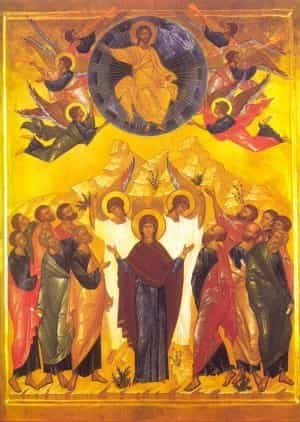

< < < Back
The Feast Of The Ascension – Return Of Kings
Surrexit Dominus vere, alleluia!
Greetings to the men of ROK, as we enter the final stretch of Paschaltide. This week, we take a break from the series on philosophy, to look at the Feast of the Ascension (which takes place the day before this article posts) and its relation to the Pentecost cycle.
Christ, the Author of the Seasons and Center of the Church’s Calendar
I was surprised to find some persons stating that Easter was a “pagan” holiday in my post about that. I’ll say a word about Easter, Ascension and Pentecost here in that regard.
The Scriptures, the Tradition and the Liturgy of the Church all associate our Lord’s Passion with the Jewish Passover, both as the fulfillment of the prophetic types of the Passover, and also as occurring on the eve of Passover in actual fact. The Church’s method of calculating Easter corresponds closely to Passover (which came later this year because it is a “leap year” on the Jewish calendar, calling for an whole month to be added). Easter is always the Sunday following the first full moon after the Spring Equinox, as this corresponded to the Sunday after Passover in the year of His Passion and Resurrection. In fact, in most languages the word for it has always been Pascha, from Hebrew pesach—“Passover.”
The Scriptures say that Jesus remained on earth for forty days (Acts 1:3), and then ascended, commanding His men to wait and pray for the promised Spirit to be sent to them, which the Scriptures tell us occurred at the completion of the Pentecost (Acts 2:1). This was the Greek word (meaning “fiftieth”) used by the Jews to refer to the feast of Shavuot, or “Weeks,” since it marked “A Week of Weeks” (i.e., seven weeks) from Passover, with the fiftieth day being the fulfillment of this period—also called “the counting of the Omer,” as per the Lord’s command in Leviticus 23: 15-16. In any case, now you know the correspondence of Easter, Paschaltide, Ascension and Pentecost to the exact events of the Bible.
The Feast of the Ascension is my favorite Feast, and is the dedication of my hermitage; our old webpage, “Idithun,” was a reference to the man by that name amongst King David’s choirmasters. The name was translated by St. Isidore of Seville as meaning “leaping up, or leaping over,” and was said to be suitable for the holy choirmaster because “by singing, he leapt over all those who keep their thoughts bent down low to the earth, thinking only of transitory things.”
As the psalms were always read as a prophetic book, full of prophesies and types of Jesus the Christ, this name was taken to be especially suitable to Him in reference to His Ascension. St. Notker’s Sequence takes up this theme, and marvelously explains the meaning of the feast. I give the Latin and English, underneath.
The music builds very deliberately in this sequence; it begins fairly monotonously, with the tones not straying far from the tonic. It begins to soar when it gets to the greatest of all ascents, the one made on this day by the Son of God. The sequence:
1. Summi triumphum Regis prosequamur laude.
2a. Qui cæli, qui terræ regit sceptra inferni jure domito.
2b. Qui sese pro nobis redimendis per magnum dedit precium.
3a. Huic nomen extat conveni’ens Idithum.
3b. Nam transilivit omnes strenue montes colliculosque Bethel,
4a. Saltum de cælo dedit in virginalem ventrem, inde in pelagus seculi.
4b. Postquam illud suo mitigavit potentatu, tetras Phlegethontis assiliit tenebras.
5a. Principis illius disturbato imperio.
5b. Maniplis plurimis inde erutis, mundum illustrat suo jubare.
6a. Captivitatemque detentam in ibi, victor duxit secum.
6b. Et redivivum jam suis se præbuit servis et amicis.
7a. Denique saltum dederat hodie maximum, nubes polosque cursu præpeti transiens.
7b. Celebret ergo populus hunc diem credulus cujus morbida, Idithum, corpora in semetipso altis sedibus cæli invexit Dei Filius.
8a. Et tremens, judicem expectat adfuturum, ut duo angeli fratres docuerunt,
8b. Qui Jesus a vobis assumptus est in cælum, iterum veniet, ut vidistis eum.
9a. Jam Idithum nostrum vocibus sedulis omnes imploremus,
9b. Ut a dextris Patris qui sedet, Spiritum mittat nobis sanctum,
10. In fine sæculi, ipse quocque semper sit nobiscum.
1. Let us enter upon the High King’s triumph with praise,
2a. Who rules heaven and earth with His sceptre, hell’s might being now destroyed.
2b. He gave Himself, o costly price!, for us, who needed redeeming.
3a. Thus, Idithun stands out as a fitting name for this Man,
3b. For mightily hath he leapt over all the mountains and hills of Bethel.
4a. From heaven, He leapt into the Virgin’s womb; from thence, into the world’s vast sea.
4b. After He calmed that by His power, He assailed the loathsome darkness of Phlegethon.
5a. With the prince thereof’s empire overthrown,
5b. And many delivered thence from their shackles, He illumined the world by His rising, like the Dayspring.
6a. And indeed, there He bound captivity itself, and led it behind Him as a Conqueror.
6b. At last He showed Himself to His servants and friends, alive again.
7a. Next, on this day, He made the greatest leap of all, passing o’er the clouds and heaven’s vaults with fleet-footed course!
7b. Therefore celebrate this day, believing populace, whose ailing flesh Idithun has, in His own Self, borne up to the lofty thrones of heaven, as God’s own Son.
8a. And, trembling, expect Him again as Judge, as angels twain taught the brethren:
8b. “This Jesus who was taken from you to heaven shall come in like manner as ye have seen Him going.”
9a. Now, with unceasing voices let us all implore our Idithun,
9b. That He Who sits at the Father’s right hand would send us His Holy Spirit,
10. That till the end of the age He too may abide with us forever.
I am drawn to the Ascension, for the way it seems to recapitulate in itself all of Christ’s dispensation, pointing backwards and forwards to everything. His departure from us, points back to His arrival amongst us at the Incarnation. There, God humbled and emptied Himself; now, He lifts us up with Him and promises to fill us with the Spirit. His departure also looks forward to the Parousia, when He comes again as Judge on Doomsday.

As His Apostles were with Him when He left, so shall they be when He returns for the Doom of man.
The Ascension also consummates the Paschal victory. Ancient conquerors used to return in triumph to their city with a train of captives and spoils; here the high King is returning to the heavenly citadel with His captives and spoils in train, the fruits of His war of conquest fought upon the Cross.
It also points forward to the Pentecost, and the descent of the Spirit. On account of the Incarnation and Redemption, man’s nature is now able to share by grace in the divine nature, as St. Peter says in His second epistle (1:4). Thus, in ascending, He promises to send the faithful the Spirit of Adoption, by which they call “abba, father.” His departure is thus a bittersweet moment, in which the frequent liturgical cry of Paschaltide—“Abide with us yet a while longer, Lord; for the day is now long spent, and eventide draws nigh”—becomes poignant, describing the current age of the world, which is now begun: the age of the Church, in which our Lord’s presence continues under the Sacramental veil, but His Person has ascended up from us. What joy, to see the God-man ascending over all; what sorrow, to see the Lord depart!

Yet in going, He promises to be with us through the activity of this same, promised Spirit, by Whom the Church is continually born and renewed, and the Sacraments are wrought, keeping Christ with us. And the Spirit indeed continues to deepen the knowledge of the Church, leading Her into all truth, though with no change in the substance of what she knew before. Thus, our Lord spoke truly when He said it was better for us if He departed, for know, in the Church formed and illumined by His Spirit, we can know Him better than we otherwise could have.
The nine-day period between Ascension and the Feast of Pentecost, in which the Apostles and faithful waited and prayed for the Spirit, became the basis of the devotional practice of “novenas”—nine days of prayer with a specific goal in mind. The men of ROK may wish to observe a traditional Novena to the Holy Ghost from this Friday to next Saturday. In the link just given, one finds prayers to be said every day on the right; click the days of the Novena for a prayer proper to each day, in addition to a brief description of each gift of the Holy Ghost, for those who do not understand them, yet. Those who find the English verses of poetry corny, may prefer to simply recite the original Latin verses, or another translation.
Next week we will speak of Pentecost and its significance, and prepare to take leave of this most sacred season. For now, I close with some of the Roman Breviary’s lessons (taken from Pope St. Leo the Great) for the Feast.
After the blessed and glorious Resurrection of our Lord Jesus Christ, wherein the Divine Power raised up in three days the true Temple of God Which the iniquity of the Jews had destroyed John ii. 19, God was pleased to ordain, by His Most Sacred Will, and in His Providence for our instruction and the profit of our souls, a season of forty days—which season, dearly beloved brethren, doth end on this day. During that season the bodily Presence of the Lord still lingered on earth, that the reality of the fact of His having risen again from the dead might be armed with all needful proofs. The death of Christ had troubled the hearts of many of His disciples their thoughts were sad when they remembered His agony upon the Cross, His giving up of the Ghost, and the laying in the grave of His lifeless Body, and a sort of hesitation had begun to weigh on them.
Hence the most blessed Apostles and all the disciples, who had been fearful at the finishing on the Cross, and doubtful of the trustworthiness of the rising again, were so strengthened by the clear demonstration of the fact, that, when they saw the Lord going up into the height of heaven, they sorrowed not, many there were even filled with great joy and, in all verity, it was a great and unspeakable cause for joy to see Manhood, in the presence of that multitude of believers, exalted above all creatures even heavenly, rising above the ranks of the angelic armies and speeding Its glorious way where the most noble of the Archangels lie far behind, to rest no lower than that place where, high above all principality and power, It taketh Its seat at the right hand of the Eternal Father, Sharer of His throne, and Partaker of His glory, and still of the very human nature which the Son hath taken upon Himself. Now do Thou, o Lord, have mercy upon us. Thanks be to God!
Read Next: The Relationships Between Skepticism, Dogmatism, And Certitude